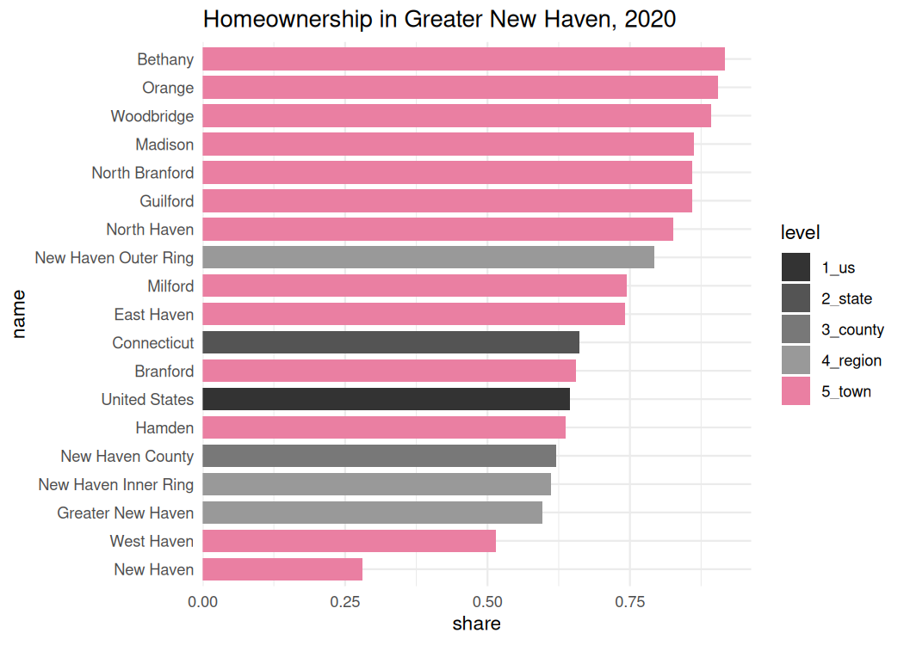

The goal of cwi is to get data, primarily the Census ACS, fetched, aggregated, and analyzed for DataHaven’s 2019 Community Index reports. This includes functions to speed up and standardize analysis for multiple staff people, preview trends and patterns we’ll need to write about, and get data in more layperson-friendly formats.
It depends on many functions from Camille’s brilliantly-named camiller package.
Installation
You can install this package from GitHub with:
Dependencies
In addition to camiller, this package relies heavily on:
- The
tidyversepackages, namelymagrittr,dplyr,tidyr,purrr,readr,stringr,forcats, andggplot2(version >= 3.0.0) (so basically all the tidyverse) -
rlangandtidyselectfor non-standard evaluation in many functions -
tidycensusfor actually getting all the Census data -
sfisn’t required but it’s encouraged
Data
cwi ships with several datasets and shapefiles. These include:
- Shapes (as
sfobjects) of towns, tracts, and city neighborhoods for New Haven, Hartford, Bridgeport, and Stamford - Common ACS table numbers—hopefully decreases time spent prowling around FactFinder
- Definitions of neighborhoods by tract or block group, and of regions by town
Sources
This package contains functions to make it easier and more reproducible to fetch and analyze data from:
- American Community Survey (US Census Bureau)
- Decennial Census (US Census Bureau)
- Quarterly Workforce Indicators (US Census Bureau Center for Economic Studies)
- Local Area Unemployment Statistics (Bureau of Labor Statistics)
More to come (as of 7/17/2018) may include simplifications of working with LEHD Origin-Destination Employment Statistics (LODES) and ACS public use microdata samples (PUMS) via IPUMS.
Example
Here’s an example of getting a big table to calculate homeownership rates across many geographies at once:
tenure <- multi_geo_acs(
table = basic_table_nums$tenure,
year = 2016,
regions = regions[c("Greater New Haven", "New Haven Inner Ring", "New Haven Outer Ring")],
counties = "New Haven",
us = T
)
#> Table B25003: TENURE
#> Geographies included:
#> Towns: all
#> Regions: Greater New Haven, New Haven Inner Ring, New Haven Outer Ring
#> Counties: New Haven County
#> State: 09
#> US: Yes
tenure
#> # A tibble: 99 x 9
#> GEOID NAME variable estimate moe level state county year
#> <chr> <chr> <chr> <dbl> <dbl> <fct> <chr> <chr> <dbl>
#> 1 1 United Stat… B25003_001 1.18e8 222078 1_us <NA> <NA> 2016
#> 2 1 United Stat… B25003_002 7.49e7 360470 1_us <NA> <NA> 2016
#> 3 1 United Stat… B25003_003 4.28e7 142056 1_us <NA> <NA> 2016
#> 4 09 Connecticut B25003_001 1.35e6 3509 2_state <NA> <NA> 2016
#> 5 09 Connecticut B25003_002 9.00e5 5427 2_state <NA> <NA> 2016
#> 6 09 Connecticut B25003_003 4.54e5 3843 2_state <NA> <NA> 2016
#> 7 09009 New Haven C… B25003_001 3.26e5 1531 3_coun… 09 <NA> 2016
#> 8 09009 New Haven C… B25003_002 2.04e5 1887 3_coun… 09 <NA> 2016
#> 9 09009 New Haven C… B25003_003 1.23e5 1716 3_coun… 09 <NA> 2016
#> 10 <NA> Greater New… B25003_001 1.77e5 1434 4_regi… <NA> <NA> 2016
#> # … with 89 more rowshomeownership <- tenure %>%
label_acs() %>%
select(name = NAME, level, label, estimate) %>%
filter((!str_detect(level, "towns")) | name %in% regions$`Greater New Haven`) %>%
mutate(label = str_remove(label, "Total!!")) %>%
group_by(level, name) %>%
camiller::calc_shares(group = label, denom = "Total") %>%
filter(label == "Owner occupied")
homeownership
#> # A tibble: 19 x 5
#> # Groups: level, name [19]
#> level name label estimate share
#> <fct> <chr> <fct> <dbl> <dbl>
#> 1 1_us United States Owner occupied 74881068 0.636
#> 2 2_state Connecticut Owner occupied 900223 0.665
#> 3 3_counties New Haven County Owner occupied 203568 0.624
#> 4 4_regions Greater New Haven Owner occupied 106876 0.602
#> 5 4_regions New Haven Inner Ring Owner occupied 34337 0.629
#> 6 4_regions New Haven Outer Ring Owner occupied 58447 0.802
#> 7 5_towns Bethany Owner occupied 1807 0.904
#> 8 5_towns Branford Owner occupied 8331 0.679
#> 9 5_towns East Haven Owner occupied 7919 0.705
#> 10 5_towns Guilford Owner occupied 7314 0.855
#> 11 5_towns Hamden Owner occupied 15335 0.657
#> 12 5_towns Madison Owner occupied 5932 0.874
#> 13 5_towns Milford Owner occupied 16314 0.757
#> 14 5_towns New Haven Owner occupied 14092 0.282
#> 15 5_towns North Branford Owner occupied 4818 0.883
#> 16 5_towns North Haven Owner occupied 6969 0.833
#> 17 5_towns Orange Owner occupied 4267 0.867
#> 18 5_towns West Haven Owner occupied 11083 0.555
#> 19 5_towns Woodbridge Owner occupied 2695 0.919geo_level_plot(homeownership, value = share, hilite = "#EA7FA2",
title = "Homeownership in Greater New Haven, 2016")
#> Registered S3 methods overwritten by 'ggplot2':
#> method from
#> [.quosures rlang
#> c.quosures rlang
#> print.quosures rlang
See more detail in the vignette: vignette("basic-workflow").